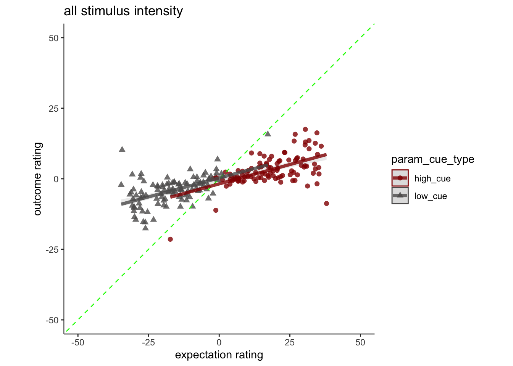
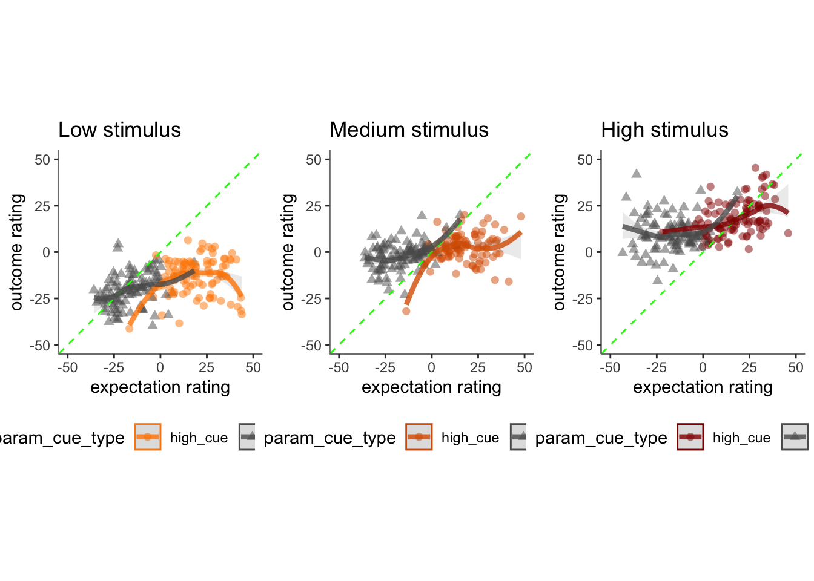
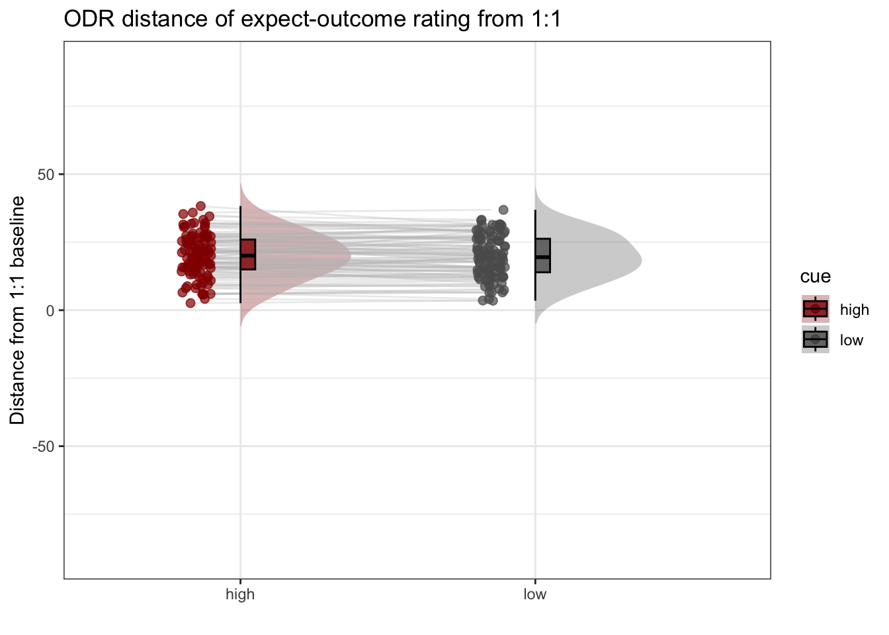
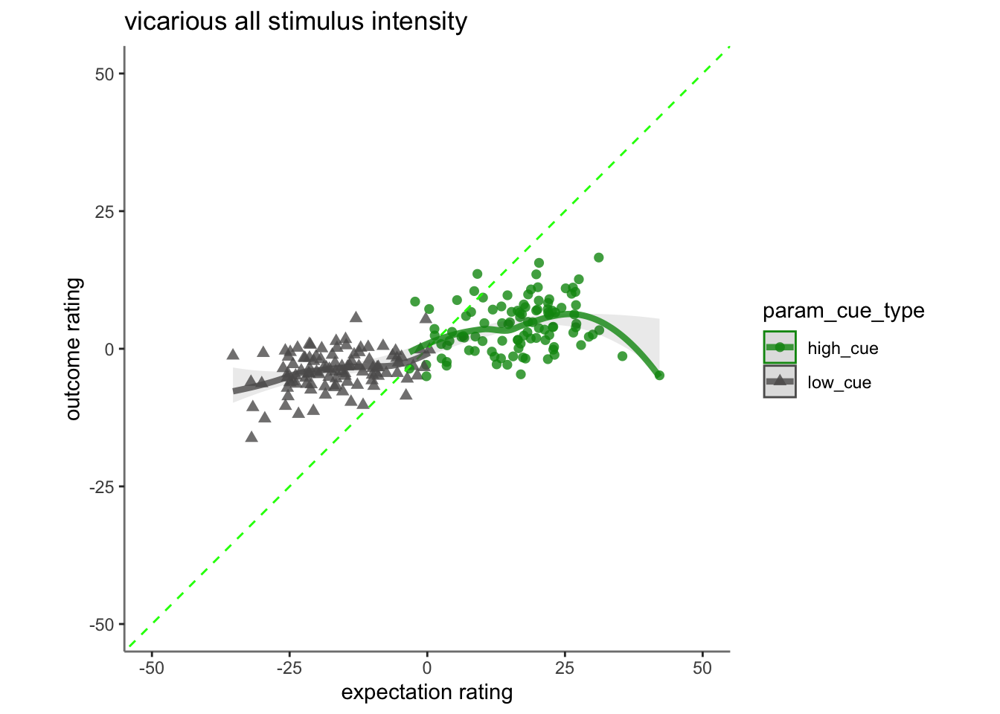
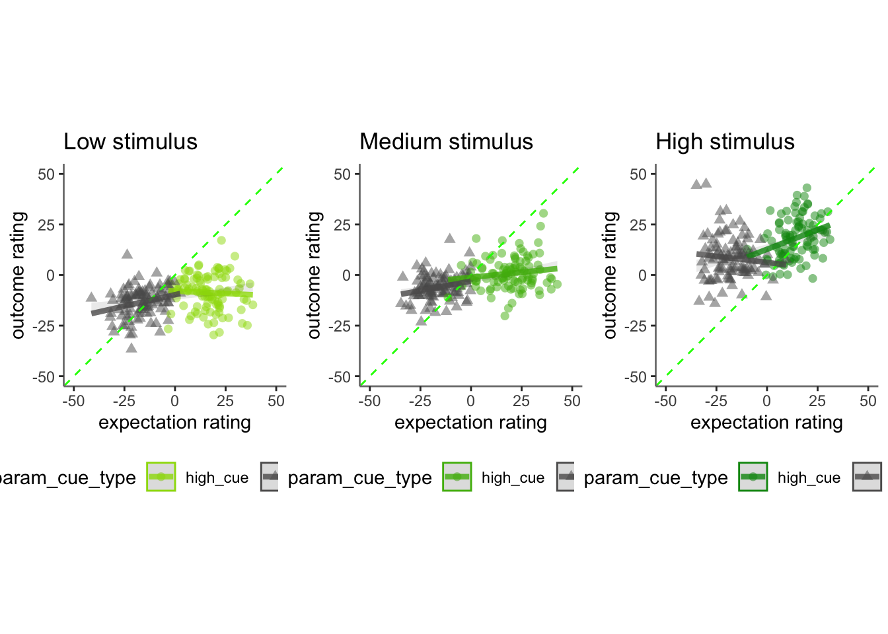
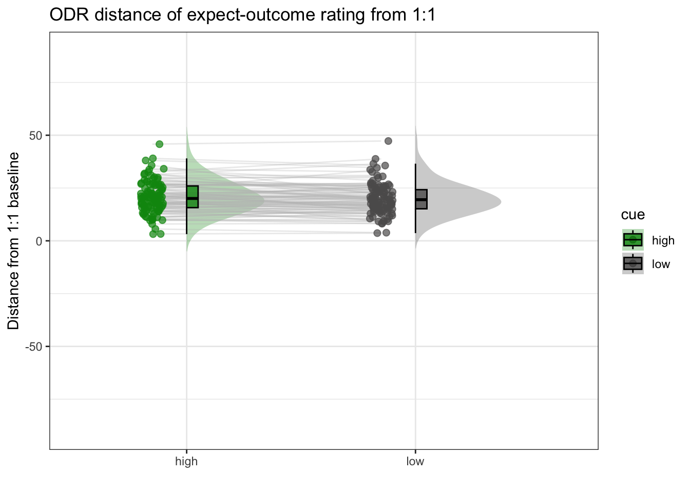
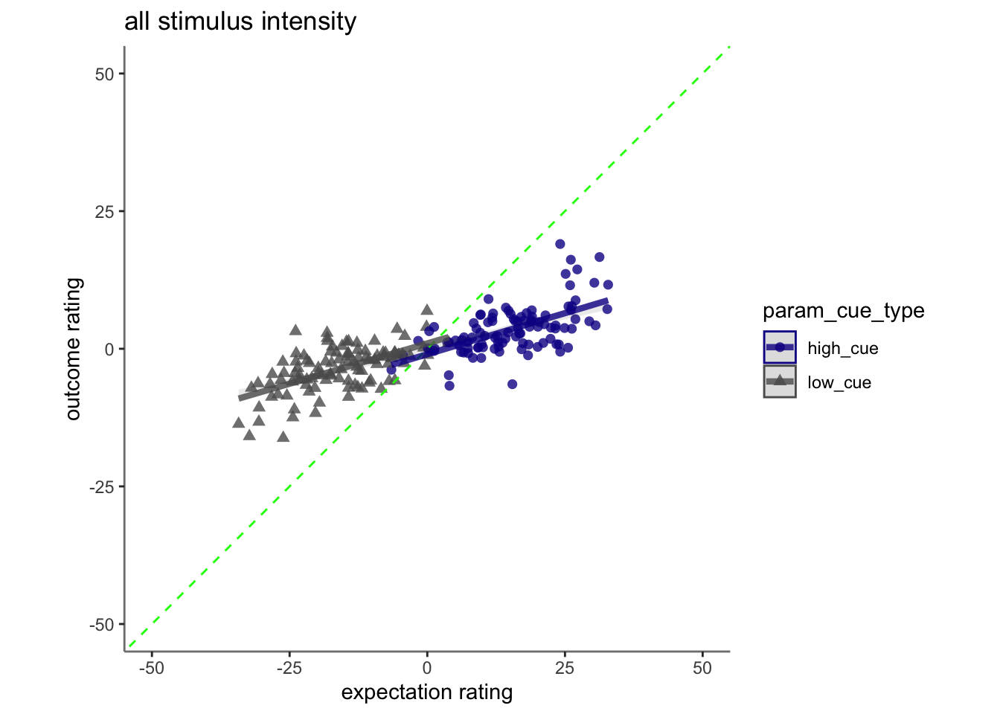
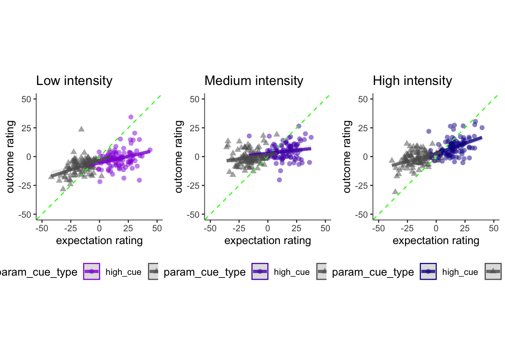
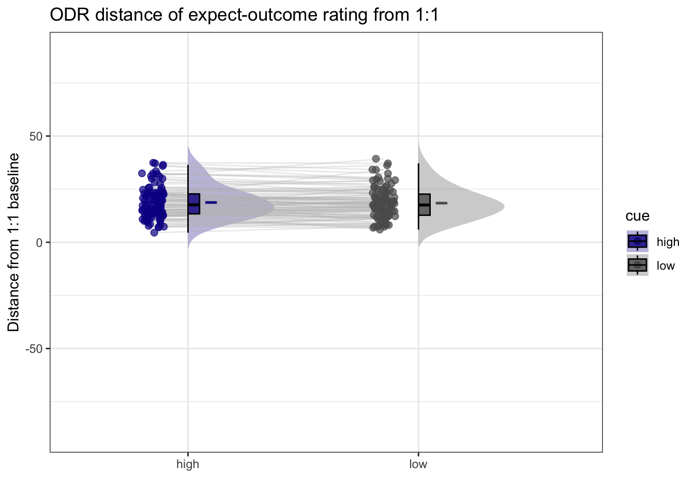

Chapter 16 [ beh ] outcome_demean_per_run ~ cue * stim * expectrating * n-1outcomerating
What is the purpose of this notebook?
Here, I model the outcome ratings as a function of cue, stimulus intensity, expectation ratings, N-1 outcome rating.
* As opposed to notebook 15, I want to check if the demeaning process should be for runs as opposed to subjects.
* In other words, calculate the average within run and subtract ratings
* Main model: lmer(outcome_rating ~ cue * stim * expectation rating + N-1 outcomerating)
* Main question: What constitutes a reported outcome rating?
* Sub questions:
- If there is a linear relationship between expectation rating and outcome rating, does this differ as a function of cue?
- How does a N-1 outcome rating affect current expectation ratings?
- Later, is this effect different across tasks or are they similar?
- IV: stim (high / med / low) cue (high / low) expectation rating (continuous) N-1 outcome rating (continuous)
- DV: outcome rating
Some thoughts, TODOs
- Standardized coefficients
- Slope difference? Intercept difference? ( cue and expectantion rating)
- Correct for the range (within participant) hypothesis:
- Larger expectation leads to prediction error
- Individual differences in ratings
- Outcome experience, based on behavioral experience What are the brain maps associated with each component.
load data and combine participant data
## event02_expect_RT event04_actual_RT event02_expect_angle event04_actual_angle
## Min. :0.6504 Min. :0.0171 Min. : 0.00 Min. : 0.00
## 1st Qu.:1.6200 1st Qu.:1.9188 1st Qu.: 29.55 1st Qu.: 37.83
## Median :2.0511 Median :2.3511 Median : 57.58 Median : 60.49
## Mean :2.1337 Mean :2.4011 Mean : 61.88 Mean : 65.47
## 3rd Qu.:2.5589 3rd Qu.:2.8514 3rd Qu.: 88.61 3rd Qu.: 87.70
## Max. :3.9912 Max. :3.9930 Max. :180.00 Max. :180.00
## NA's :651 NA's :638 NA's :651 NA's :64116.1 linear model
## boundary (singular) fit: see help('isSingular')## Linear mixed model fit by REML. t-tests use Satterthwaite's method [
## lmerModLmerTest]
## Formula: demean_outcome ~ cue_con * stim_con_linear * demean_expect +
## cue_con * stim_con_quad * demean_expect + lag.demean_outcome +
## (cue_con * demean_expect | src_subject_id)
## Data: pvc
##
## REML criterion at convergence: 38841.2
##
## Scaled residuals:
## Min 1Q Median 3Q Max
## -6.5283 -0.6045 0.0387 0.5782 4.6628
##
## Random effects:
## Groups Name Variance Std.Dev. Corr
## src_subject_id (Intercept) 3.373e-01 0.58079
## cue_con 2.199e+01 4.68893 0.32
## demean_expect 2.179e-02 0.14763 0.01 -0.59
## cue_con:demean_expect 4.177e-03 0.06463 -0.93 -0.53 0.36
## Residual 2.533e+02 15.91427
## Number of obs: 4621, groups: src_subject_id, 104
##
## Fixed effects:
## Estimate Std. Error df t value
## (Intercept) -6.822e-01 3.293e-01 2.484e+02 -2.072
## cue_con 2.725e+00 8.407e-01 8.540e+01 3.241
## stim_con_linear 2.954e+01 7.909e-01 4.534e+03 37.350
## demean_expect 1.366e-01 2.110e-02 1.020e+02 6.477
## stim_con_quad 2.391e+00 6.794e-01 4.469e+03 3.519
## lag.demean_outcome 2.758e-02 1.117e-02 4.578e+03 2.469
## cue_con:stim_con_linear 6.842e-01 1.580e+00 4.534e+03 0.433
## cue_con:demean_expect -2.639e-02 2.678e-02 1.246e+02 -0.986
## stim_con_linear:demean_expect 1.358e-03 3.123e-02 4.521e+03 0.043
## cue_con:stim_con_quad -4.888e+00 1.362e+00 4.525e+03 -3.588
## demean_expect:stim_con_quad 2.769e-02 2.734e-02 4.526e+03 1.013
## cue_con:stim_con_linear:demean_expect 2.898e-01 6.264e-02 4.543e+03 4.626
## cue_con:demean_expect:stim_con_quad -7.118e-02 5.460e-02 4.464e+03 -1.304
## Pr(>|t|)
## (Intercept) 0.039318 *
## cue_con 0.001698 **
## stim_con_linear < 2e-16 ***
## demean_expect 3.34e-09 ***
## stim_con_quad 0.000437 ***
## lag.demean_outcome 0.013594 *
## cue_con:stim_con_linear 0.665094
## cue_con:demean_expect 0.326232
## stim_con_linear:demean_expect 0.965324
## cue_con:stim_con_quad 0.000337 ***
## demean_expect:stim_con_quad 0.311173
## cue_con:stim_con_linear:demean_expect 3.82e-06 ***
## cue_con:demean_expect:stim_con_quad 0.192365
## ---
## Signif. codes: 0 '***' 0.001 '**' 0.01 '*' 0.05 '.' 0.1 ' ' 1##
## Correlation matrix not shown by default, as p = 13 > 12.
## Use print(x, correlation=TRUE) or
## vcov(x) if you need it## optimizer (nloptwrap) convergence code: 0 (OK)
## boundary (singular) fit: see help('isSingular')16.2 pain run, collapsed across stimulus intensity
 
Q. Are those overestimating for high cues also underestimators for low cues?
Here, I calculate Orthogonal distance from the 1:1 slope. Based on that, we test whether the absolute ODR distance is equivalent across cues. If a participant equally overestimates for a high cue and underestimates a stimuli for a low cue, their ODR distance should be the same. This is reflected in the subject-level slopes, which are parallel
Can you test if the slopes are the same? That might tell us something about whether, expectancies translate into outcomes with the same efficacy across all three tasks.
## Linear mixed model fit by REML. t-tests use Satterthwaite's method [
## lmerModLmerTest]
## Formula:
## as.formula(reformulate(c(iv, sprintf("(%s|%s)", iv, subject_keyword)),
## response = dv))
## Data: df
##
## REML criterion at convergence: 38104.4
##
## Scaled residuals:
## Min 1Q Median 3Q Max
## -2.2867 -0.6574 -0.1582 0.5504 5.5552
##
## Random effects:
## Groups Name Variance Std.Dev. Corr
## src_subject_id (Intercept) 53.83321 7.3371
## cue_namelow 0.03013 0.1736 -1.00
## Residual 211.69016 14.5496
## Number of obs: 4621, groups: src_subject_id, 104
##
## Fixed effects:
## Estimate Std. Error df t value Pr(>|t|)
## (Intercept) 20.1918 0.7924 103.2043 25.482 <2e-16 ***
## cue_namelow -0.4341 0.4291 3901.7962 -1.012 0.312
## ---
## Signif. codes: 0 '***' 0.001 '**' 0.01 '*' 0.05 '.' 0.1 ' ' 1
##
## Correlation of Fixed Effects:
## (Intr)
## cue_namelow -0.313
## optimizer (nloptwrap) convergence code: 0 (OK)
## boundary (singular) fit: see help('isSingular')
16.3 vicarious


## Linear mixed model fit by REML. t-tests use Satterthwaite's method [
## lmerModLmerTest]
## Formula:
## as.formula(reformulate(c(iv, sprintf("(%s|%s)", iv, subject_keyword)),
## response = dv))
## Data: df
##
## REML criterion at convergence: 40110.9
##
## Scaled residuals:
## Min 1Q Median 3Q Max
## -2.8841 -0.6851 -0.1162 0.5364 5.2303
##
## Random effects:
## Groups Name Variance Std.Dev. Corr
## src_subject_id (Intercept) 47.4951 6.892
## cue_namelow 0.0228 0.151 -1.00
## Residual 236.8877 15.391
## Number of obs: 4802, groups: src_subject_id, 104
##
## Fixed effects:
## Estimate Std. Error df t value Pr(>|t|)
## (Intercept) 20.5550 0.7549 105.0633 27.229 <2e-16 ***
## cue_namelow -0.5205 0.4455 4234.0518 -1.168 0.243
## ---
## Signif. codes: 0 '***' 0.001 '**' 0.01 '*' 0.05 '.' 0.1 ' ' 1
##
## Correlation of Fixed Effects:
## (Intr)
## cue_namelow -0.328
## optimizer (nloptwrap) convergence code: 0 (OK)
## boundary (singular) fit: see help('isSingular')## Warning in geom_line(data = subjectwise, aes(group = .data[[subject]], x =
## as.numeric(factor(.data[[iv]])) - : Ignoring unknown aesthetics: fill## Warning: Removed 1 rows containing non-finite values (`stat_half_ydensity()`).## Warning: Removed 1 rows containing non-finite values (`stat_boxplot()`).## Warning: Removed 1 row containing missing values (`geom_line()`).## Warning: Removed 1 rows containing missing values (`geom_point()`).## Warning: Removed 1 rows containing non-finite values (`stat_half_ydensity()`).## Warning: Removed 1 rows containing non-finite values (`stat_boxplot()`).## Warning: Removed 1 row containing missing values (`geom_line()`).## Warning: Removed 1 rows containing missing values (`geom_point()`).
16.4 cognitive


## Linear mixed model fit by REML. t-tests use Satterthwaite's method [
## lmerModLmerTest]
## Formula:
## as.formula(reformulate(c(iv, sprintf("(%s|%s)", iv, subject_keyword)),
## response = dv))
## Data: df
##
## REML criterion at convergence: 38340.3
##
## Scaled residuals:
## Min 1Q Median 3Q Max
## -2.4766 -0.6631 -0.1333 0.5071 6.6831
##
## Random effects:
## Groups Name Variance Std.Dev. Corr
## src_subject_id (Intercept) 44.45232 6.6673
## cue_namelow 0.02064 0.1437 -1.00
## Residual 187.79614 13.7039
## Number of obs: 4719, groups: src_subject_id, 104
##
## Fixed effects:
## Estimate Std. Error df t value Pr(>|t|)
## (Intercept) 18.9099 0.7192 101.7148 26.293 <2e-16 ***
## cue_namelow -0.5223 0.4003 4083.1539 -1.305 0.192
## ---
## Signif. codes: 0 '***' 0.001 '**' 0.01 '*' 0.05 '.' 0.1 ' ' 1
##
## Correlation of Fixed Effects:
## (Intr)
## cue_namelow -0.311
## optimizer (nloptwrap) convergence code: 0 (OK)
## boundary (singular) fit: see help('isSingular')## Warning in geom_line(data = subjectwise, aes(group = .data[[subject]], x =
## as.numeric(factor(.data[[iv]])) - : Ignoring unknown aesthetics: fill
# library(plotly)
# plot_ly(x=subjectwise_naomit_2dv$param_cue_type, y=subjectwise_naomit_2dv$DV1_mean_per_sub, z=subjectwise_naomit_2dv$DV2_mean_per_sub, type="scatter3d", mode="markers", color=subjectwise_naomit_2dv$param_cue_type)16.5 across tasks (PVC), is the slope for (highvslow cue) the same?Tor question
- Adding “participant” as random effects leads to a singular boundary issue. The reason is because there is no random effects variance across participants.
- If I add task as a random effect, in other words, allowing for differences across tasks, I get the following results:
- expectancy-outcome relationship differs across tasks, taskname_lin:demean_expect, t(14130) = 4.317, p < .001
- expectancy-outcome relationship differs across cue and tasks, “taskname_lin:cue_con:demean_expect”, t(14130) = 5.758, p < .001 taskname_lin:cue_con -3.790e+00 1.448e+00 1.413e+04 -2.618 0.00886 ** ++ taskname_lin:demean_expect 9.854e-02 2.283e-02 1.413e+04 4.317 1.59e-05 cue_con:demean_expect -9.077e-02 1.987e-02 1.413e+04 -4.569 4.95e-06 cue_con:taskname_quad 5.352e+00 1.334e+00 1.413e+04 4.012 6.04e-05 demean_expect:taskname_quad -1.596e-01 2.253e-02 1.413e+04 -7.084 1.47e-12 taskname_lin:cue_con:demean_expect 2.629e-01 4.565e-02 1.413e+04 5.758 8.67e-09 ** cue_con:demean_expect:taskname_quad -1.021e-01 4.505e-02 1.413e+04 -2.266 0.02348
- If I add sub as random effect and ignore singular. Plus, if I remove the cue contrast…
- expectancy-outcome relationship differs across tasks, factor(param_task_name):demean_expect, F(2, 14136) = 54.765, p < .001
p <- load_task_social_df(datadir, taskname = 'pain', subject_varkey = subject_varkey, iv = iv, exclude = exclude)
v <- load_task_social_df(datadir, taskname = 'vicarious', subject_varkey = subject_varkey, iv = iv, exclude = exclude)
c <- load_task_social_df(datadir, taskname = 'cognitive', subject_varkey = subject_varkey, iv = iv, exclude = exclude)
p_sub <- p[, c("param_task_name", "param_cue_type", "src_subject_id","session_id", "param_run_num", "param_stimulus_type", "event04_actual_angle", "event02_expect_angle")]
v_sub <- v[, c("param_task_name", "param_cue_type", "src_subject_id","session_id", "param_run_num", "param_stimulus_type", "event04_actual_angle", "event02_expect_angle")]
c_sub <- c[, c("param_task_name", "param_cue_type", "src_subject_id", "session_id", "param_run_num","param_stimulus_type", "event04_actual_angle", "event02_expect_angle")]
pvc_sub <- do.call("rbind", list(p_sub, v_sub, c_sub))maindata <- pvc_sub %>%
group_by(src_subject_id) %>%
mutate(event04_actual_angle = as.numeric(event04_actual_angle)) %>%
mutate(event02_expect_angle = as.numeric(event02_expect_angle)) %>%
mutate(avg_outcome = mean(event04_actual_angle, na.rm = TRUE)) %>%
mutate(demean_outcome = event04_actual_angle - avg_outcome) %>%
mutate(avg_expect = mean(event02_expect_angle, na.rm = TRUE)) %>%
mutate(demean_expect = event02_expect_angle - avg_expect)
data_p2= maindata %>%
arrange(src_subject_id ) %>%
group_by(src_subject_id) %>%
mutate(trial_index = row_number())
data_a3 <- data_p2 %>%
group_by(src_subject_id, session_id, param_run_num) %>%
mutate(trial_index = row_number(param_run_num))
data_a3lag <-
data_a3 %>%
group_by(src_subject_id, session_id, param_run_num) %>%
mutate(lag.demean_outcome = dplyr::lag(demean_outcome, n = 1, default = NA))
data_a3lag_omit <- data_a3lag[complete.cases(data_a3lag$lag.demean_outcome),]
df <- data_a3lag_omit
pvc_sub <- simple_contrasts_beh(df)## Warning: Unknown or uninitialised column: `stim_con_linear`.## Warning: Unknown or uninitialised column: `stim_con_quad`.## Warning: Unknown or uninitialised column: `cue_con`.## Warning: Unknown or uninitialised column: `cue_name`.# contrast code 1 linear
pvc_sub$taskname_lin[pvc_sub$param_task_name == "pain"] <- 0.5## Warning: Unknown or uninitialised column: `taskname_lin`.pvc_sub$taskname_lin[pvc_sub$param_task_name == "vicarious"] <- 0
pvc_sub$taskname_lin[pvc_sub$param_task_name == "cognitive"] <- -0.5
# contrast code 2 quadratic
pvc_sub$taskname_quad[pvc_sub$param_task_name == "pain"] <- -0.33## Warning: Unknown or uninitialised column: `taskname_quad`.pvc_sub$taskname_quad[pvc_sub$param_task_name == "vicarious"] <- 0.66
pvc_sub$taskname_quad[pvc_sub$param_task_name == "cognitive"] <- -0.33
pvc_sub$sub = factor(pvc_sub$src_subject_id)
# model_test = lm(pvc_sub$demean_outcome~ pvc_sub$demean_expect)
model_task = lmer(demean_outcome~ taskname_lin*cue_con*demean_expect + taskname_quad*cue_con*demean_expect + (1 | sub), data = pvc_sub)
model_wotask = lmer(demean_outcome~ cue_con*demean_expect +(1 | sub), data = pvc_sub)## boundary (singular) fit: see help('isSingular')summary(model_task)## Linear mixed model fit by REML. t-tests use Satterthwaite's method [
## lmerModLmerTest]
## Formula:
## demean_outcome ~ taskname_lin * cue_con * demean_expect + taskname_quad *
## cue_con * demean_expect + (1 | sub)
## Data: pvc_sub
##
## REML criterion at convergence: 139399.8
##
## Scaled residuals:
## Min 1Q Median 3Q Max
## -4.5727 -0.6342 -0.1226 0.5514 5.3674
##
## Random effects:
## Groups Name Variance Std.Dev.
## sub (Intercept) 0.1232 0.351
## Residual 600.5633 24.506
## Number of obs: 15091, groups: sub, 111
##
## Fixed effects:
## Estimate Std. Error df t value
## (Intercept) -3.019e-01 2.951e-01 2.477e+02 -1.023
## taskname_lin 1.801e+01 6.935e-01 1.447e+04 25.973
## cue_con -9.551e+00 5.853e-01 1.369e+04 -16.319
## demean_expect 4.696e-01 9.457e-03 1.156e+04 49.657
## taskname_quad -1.082e+01 6.465e-01 1.482e+04 -16.741
## taskname_lin:cue_con -4.377e+00 1.388e+00 7.418e+03 -3.153
## taskname_lin:demean_expect 1.007e-01 2.163e-02 1.758e+03 4.655
## cue_con:demean_expect -8.861e-02 1.894e-02 4.064e+03 -4.679
## cue_con:taskname_quad 5.276e+00 1.294e+00 1.247e+04 4.078
## demean_expect:taskname_quad -1.730e-01 2.157e-02 8.290e+03 -8.022
## taskname_lin:cue_con:demean_expect 2.685e-01 4.314e-02 1.405e+04 6.224
## cue_con:demean_expect:taskname_quad -1.063e-01 4.310e-02 1.484e+04 -2.466
## Pr(>|t|)
## (Intercept) 0.30723
## taskname_lin < 2e-16 ***
## cue_con < 2e-16 ***
## demean_expect < 2e-16 ***
## taskname_quad < 2e-16 ***
## taskname_lin:cue_con 0.00162 **
## taskname_lin:demean_expect 3.48e-06 ***
## cue_con:demean_expect 2.98e-06 ***
## cue_con:taskname_quad 4.56e-05 ***
## demean_expect:taskname_quad 1.18e-15 ***
## taskname_lin:cue_con:demean_expect 4.98e-10 ***
## cue_con:demean_expect:taskname_quad 0.01368 *
## ---
## Signif. codes: 0 '***' 0.001 '**' 0.01 '*' 0.05 '.' 0.1 ' ' 1
##
## Correlation of Fixed Effects:
## (Intr) tsknm_l cue_cn dmn_xp tsknm_q tsknm_ln:c_ tsknm_ln:d_
## taskname_ln 0.005
## cue_con -0.188 0.369
## demean_xpct 0.224 -0.360 -0.620
## taskname_qd 0.087 -0.004 -0.299 0.280
## tsknm_ln:c_ 0.368 0.032 0.004 0.141 -0.253
## tsknm_ln:d_ -0.374 0.022 0.146 -0.281 0.256 -0.574
## c_cn:dmn_xp -0.616 0.140 0.225 -0.197 -0.142 -0.362 0.151
## c_cn:tsknm_ -0.298 -0.253 0.088 -0.143 -0.382 -0.005 -0.097
## dmn_xpct:t_ 0.271 0.240 -0.139 0.177 0.391 -0.091 0.183
## tsknm_l:_:_ 0.145 -0.572 -0.375 0.150 -0.099 0.023 -0.120
## c_cn:dmn_:_ -0.137 -0.093 0.272 -0.123 -0.659 0.239 -0.099
## c_cn:d_ c_cn:t_ dmn_:_ t_:_:_
## taskname_ln
## cue_con
## demean_xpct
## taskname_qd
## tsknm_ln:c_
## tsknm_ln:d_
## c_cn:dmn_xp
## c_cn:tsknm_ 0.281
## dmn_xpct:t_ -0.123 -0.660
## tsknm_l:_:_ -0.280 0.256 -0.099
## c_cn:dmn_:_ 0.176 0.391 -0.255 0.185anova(model_task)## Type III Analysis of Variance Table with Satterthwaite's method
## Sum Sq Mean Sq NumDF DenDF F value
## taskname_lin 405142 405142 1 14470.1 674.6035
## cue_con 159941 159941 1 13687.7 266.3187
## demean_expect 1480894 1480894 1 11560.3 2465.8423
## taskname_quad 168310 168310 1 14820.0 280.2539
## taskname_lin:cue_con 5970 5970 1 7418.2 9.9409
## taskname_lin:demean_expect 13016 13016 1 1757.8 21.6722
## cue_con:demean_expect 13146 13146 1 4063.7 21.8899
## cue_con:taskname_quad 9989 9989 1 12473.3 16.6325
## demean_expect:taskname_quad 38647 38647 1 8289.7 64.3519
## taskname_lin:cue_con:demean_expect 23266 23266 1 14053.9 38.7401
## cue_con:demean_expect:taskname_quad 3652 3652 1 14843.7 6.0802
## Pr(>F)
## taskname_lin < 2.2e-16 ***
## cue_con < 2.2e-16 ***
## demean_expect < 2.2e-16 ***
## taskname_quad < 2.2e-16 ***
## taskname_lin:cue_con 0.001623 **
## taskname_lin:demean_expect 3.477e-06 ***
## cue_con:demean_expect 2.981e-06 ***
## cue_con:taskname_quad 4.565e-05 ***
## demean_expect:taskname_quad 1.183e-15 ***
## taskname_lin:cue_con:demean_expect 4.979e-10 ***
## cue_con:demean_expect:taskname_quad 0.013681 *
## ---
## Signif. codes: 0 '***' 0.001 '**' 0.01 '*' 0.05 '.' 0.1 ' ' 1anova(model_wotask, model_task)## refitting model(s) with ML (instead of REML)## Data: pvc_sub
## Models:
## model_wotask: demean_outcome ~ cue_con * demean_expect + (1 | sub)
## model_task: demean_outcome ~ taskname_lin * cue_con * demean_expect + taskname_quad * cue_con * demean_expect + (1 | sub)
## npar AIC BIC logLik deviance Chisq Df Pr(>Chisq)
## model_wotask 6 141394 141440 -70691 141382
## model_task 14 139396 139502 -69684 139368 2014.4 8 < 2.2e-16 ***
## ---
## Signif. codes: 0 '***' 0.001 '**' 0.01 '*' 0.05 '.' 0.1 ' ' 1# summary(model_test)model_task1 = lmer(demean_outcome~ factor(param_task_name)*demean_expect + (1 | sub), data = pvc_sub)
model_wotask1 = lmer(demean_outcome~ demean_expect+ (1 | sub), data = pvc_sub)## boundary (singular) fit: see help('isSingular')summary(model_task1)## Linear mixed model fit by REML. t-tests use Satterthwaite's method [
## lmerModLmerTest]
## Formula: demean_outcome ~ factor(param_task_name) * demean_expect + (1 |
## sub)
## Data: pvc_sub
##
## REML criterion at convergence: 139725.4
##
## Scaled residuals:
## Min 1Q Median 3Q Max
## -4.2535 -0.6307 -0.1171 0.5506 5.2255
##
## Random effects:
## Groups Name Variance Std.Dev.
## sub (Intercept) 0.03748 0.1936
## Residual 613.93050 24.7776
## Number of obs: 15091, groups: sub, 111
##
## Fixed effects:
## Estimate Std. Error df
## (Intercept) -8.081e+00 3.662e-01 8.076e+02
## factor(param_task_name)pain 2.304e+01 5.519e-01 1.465e+04
## factor(param_task_name)vicarious -1.434e+00 5.227e-01 1.508e+04
## demean_expect 3.702e-01 1.369e-02 9.687e+03
## factor(param_task_name)pain:demean_expect 1.136e-01 1.724e-02 3.523e+03
## factor(param_task_name)vicarious:demean_expect -8.418e-02 1.912e-02 1.410e+04
## t value Pr(>|t|)
## (Intercept) -22.067 < 2e-16 ***
## factor(param_task_name)pain 41.742 < 2e-16 ***
## factor(param_task_name)vicarious -2.744 0.00607 **
## demean_expect 27.033 < 2e-16 ***
## factor(param_task_name)pain:demean_expect 6.589 5.07e-11 ***
## factor(param_task_name)vicarious:demean_expect -4.403 1.08e-05 ***
## ---
## Signif. codes: 0 '***' 0.001 '**' 0.01 '*' 0.05 '.' 0.1 ' ' 1
##
## Correlation of Fixed Effects:
## (Intr) fctr(prm_tsk_nm)p fctr(prm_tsk_nm)v dmn_xp
## fctr(prm_tsk_nm)p -0.662
## fctr(prm_tsk_nm)v -0.699 0.464
## demean_xpct 0.298 -0.198 -0.209
## fctr(prm_tsk_nm)p:_ -0.237 -0.080 0.166 -0.794
## fctr(prm_tsk_nm)v:_ -0.214 0.142 0.336 -0.716
## fctr(prm_tsk_nm)p:_
## fctr(prm_tsk_nm)p
## fctr(prm_tsk_nm)v
## demean_xpct
## fctr(prm_tsk_nm)p:_
## fctr(prm_tsk_nm)v:_ 0.569anova(model_task1)## Type III Analysis of Variance Table with Satterthwaite's method
## Sum Sq Mean Sq NumDF DenDF F value
## factor(param_task_name) 1451299 725650 2 14837.1 1181.974
## demean_expect 1679513 1679513 1 14954.2 2735.674
## factor(param_task_name):demean_expect 86935 43467 2 5101.8 70.802
## Pr(>F)
## factor(param_task_name) < 2.2e-16 ***
## demean_expect < 2.2e-16 ***
## factor(param_task_name):demean_expect < 2.2e-16 ***
## ---
## Signif. codes: 0 '***' 0.001 '**' 0.01 '*' 0.05 '.' 0.1 ' ' 1anova(model_wotask1)## Type III Analysis of Variance Table with Satterthwaite's method
## Sum Sq Mean Sq NumDF DenDF F value Pr(>F)
## demean_expect 4785248 4785248 1 15089 6564.5 < 2.2e-16 ***
## ---
## Signif. codes: 0 '***' 0.001 '**' 0.01 '*' 0.05 '.' 0.1 ' ' 1anova(model_wotask1, model_task1)## refitting model(s) with ML (instead of REML)## Data: pvc_sub
## Models:
## model_wotask1: demean_outcome ~ demean_expect + (1 | sub)
## model_task1: demean_outcome ~ factor(param_task_name) * demean_expect + (1 | sub)
## npar AIC BIC logLik deviance Chisq Df Pr(>Chisq)
## model_wotask1 4 142306 142337 -71149 142298
## model_task1 8 139720 139781 -69852 139704 2594.7 4 < 2.2e-16 ***
## ---
## Signif. codes: 0 '***' 0.001 '**' 0.01 '*' 0.05 '.' 0.1 ' ' 1library(emmeans)
# emm1 = emmeans(model_task, specs = pairwise ~ stimintensity:task)
# emm1